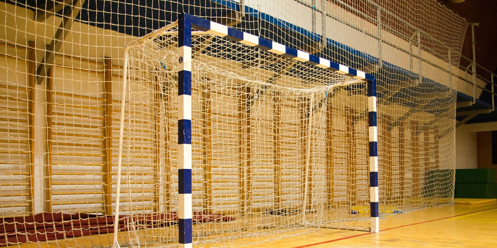

Rengøring af sportshaller i Nykøbing F & på Lolland-Falster
Få en hal der er indbydende og klar til træning, stævner og daglig drift – med faste aftaler og synligt resultat.
Kundeanmeldelser
Det siger kunderne på Lolland-Falster om Schier Rengøring
Professionel rengøring af sportshaller, der tager højde for gulve, hygiejne og belastning
En sportshal bliver hurtigt påvirket af høj trafik, sved, støv, skoaftryk, harpiks (fx fra håndbold) og fugt fra omklædning og bad. Når der bliver gjort rent på den rigtige måde, mindskes lugt, snavs og glatte områder – og både spillere, trænere og gæster får en bedre oplevelse.
Vi hjælper sportshaller og idrætsfaciliteter i Nykøbing F og på Lolland-Falster med stabile løsninger, hvor opgaver, frekvens og fokus tilpasses jeres brugsmønster og gulvtype.
Derfor vælger haller os til løbende rengøring
- Fast team og stabil kvalitet
I får en løsning med faste rutiner, så niveauet bliver ensartet, og jeres hal bliver behandlet korrekt fra gang til gang. - Gulve med sport i fokus
Vi tilpasser metoder og midler til sportsgulve, så de rengøres grundigt uden unødig slid – og med fokus på friktion og sikkerhed. - Fleksible tidspunkter
Vi kan typisk arbejde uden for de travleste perioder eller helt uden for arbejdstid, så drift og aktiviteter kan køre uforstyrret. - Tydelig plan og tjekliste
I får en klar aftale om, hvad der indgår – og hvad der evt. tilføjes ved events, sæsonskift eller ekstra behov. - Mulighed for forbrugsartikler
Efter aftale kan vi hjælpe med indkøb og opfyldning af fx papirvarer, sæbe og lignende, så I ikke løber tør i hverdagen.
Tryghed og kvalitet i praksis
- Fast kontaktperson og let kommunikation
- Aftalte nøgle- og alarmrutiner
- Løbende kvalitetstjek og hurtige justeringer ved behov
- Diskret arbejde i driftsområder og respekt for jeres instrukser
Hvad kan indgå i en aftale om sportshaller?
Indholdet tilpasses jeres faciliteter, men her er typiske områder og opgaver:
Selve hallen (banegulv) og tilstødende arealer
- Fjernelse af løst snavs, støv og skoaftryk
- Maskinvask/gulvvask efter behov (fx med gulvvaskemaskine)
- Plet- og sporbehandling ved trafikspor, gummimærker og harpiksrester
- Fokus på indgangszoner, hvor snavs trækkes med ind (særligt i våde perioder)
Foyer, gangarealer og opholdsrum
- Gulve holdes pæne og ensartede (støvsugning/gulvpleje)
- Aftørring af synlige flader og kontaktpunkter efter aftale
- Affaldshåndtering og nye poser efter aftale
- Opfriskning af indgangsparti, så helhedsindtrykket altid er i orden
- Vi kan også hjælpe med rengøring af kontor eller køkkena.
Omklædning, toiletter og badefaciliteter
- Overflader, armatur og håndvaske rengøres grundigt
- Toiletter og udsatte områder desinficeres efter aftale
- Kalk og sæberester håndteres løbende, så standarden holdes pæn
- Spejle, gulve og berøringspunkter prioriteres
- Genopfyldning efter aftale (papirvarer, sæbe m.m.)
Redskabsrum, depot og tribuner
- Støv og snavs fjernes fra gulve og frie flader
- Oprydning/affald efter aftale
- Fokus på hjørner, kanter og områder, der ofte bliver overset
Ekstra ydelser (kan tilføjes)
- Periodisk hovedrengøring (fx sæsonstart/efter stævner)
- Gulvpleje: grundigere maskinbehandling, pleje og vedligehold
- Rengøring af høje flader, paneler, lister og udvalgte inventarområder
- Ekstra indsats ved arrangementer, messer, turneringer og udlejning
Sådan starter vi op
- Kort dialog og evt. besigtigelse – vi afklarer arealer, gulvtype, brugsmønster og fokusområder.
- Rengøringsplan og tjekliste – opgaver, frekvens og standard beskrives tydeligt.
- Opstart med kvalitet i fokus – vi finjusterer metoder og detaljer, så resultatet sidder rigtigt fra start.
- Løbende opfølgning – behov kan ændre sig; planen kan justeres, når der er sæson, events eller nye rutiner.
En sportshal der fungerer – også i hverdagen
Når der bliver gjort rent med faste rutiner, bliver hallen mere behagelig at bruge, lettere at vedligeholde og pænere at vise frem for gæster. Målet er enkelt: I skal kunne åbne dørene til en hal, der ser ordentlig ud, føles frisk – og er klar til aktivitet. Det gælder både mindre faciliteter og større haller i Nykøbing F og på Lolland-Falster.
FAQ om rengøring af sportshaller
Hvad koster rengøring af en sportshal?
Prisen afhænger af kvadratmeter, gulvtype, frekvens og hvilke områder der indgår (hal, omklædning, foyer m.m.). I får et uforpligtende tilbud baseret på jeres behov.
Kan I arbejde uden for åbningstid?
Ja, ofte kan vi planlægge arbejdet uden for de travleste perioder eller helt uden for arbejdstid, så aktiviteterne forstyrres mindst muligt.
Hvordan håndterer I harpiks, gummimærker og trafikspor på gulvet?
Vi bruger metoder, der passer til sportsgulve – fx målrettet pletbehandling og maskinvask (fx med gulvvaskemaskine), så gulvet rengøres grundigt uden unødigt slid.
Bliver gulvet glat efter gulvbehandling eller vask?
Vi tilpasser dosering, udstyr og tørretid til gulvet og belastningen, og vi planlægger arbejdet, så overfladen når at blive korrekt tør og klar til brug.
Kan I lave ekstra indsats ved stævner eller særlige arrangementer?
Ja. Ved turneringer, udlejning eller travle perioder kan vi udvide efter aftale – fx før/efter events eller som en periodisk hovedrengøring.
Kan vi få en fast person eller et fast team?
Det er målet i de fleste aftaler, fordi det giver mest stabil kvalitet og bedst kendskab til jeres faciliteter.
Kan I hjælpe med forbrugsartikler som papirvarer og sæbe?
Ja, efter aftale kan vi hjælpe med indkøb og opfyldning af forbrugsartikler, så I har styr på hverdagen.
Få et uforpligtende tilbud på rengøring af sportshaller
Kontakt os og fortæl kort om jeres sportshal, gulvtype, ønsket frekvens og hvilke områder der skal indgå. Så vender vi hurtigt tilbage med et tilbud på en løsning, der passer til jeres drift og aktiviteter.
Telefon: 50 50 76 65 | E-mail: my@schier.dk
Folemarken 59, 4800 Nykøbing F | CVR-nr. 38199633